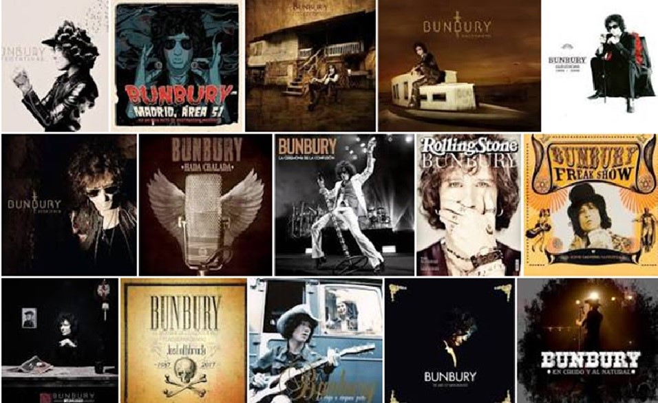

Enrique Ortiz de Landázuri Izarduy (Zaragoza, 11 de agosto de 1967), más conocido como Enrique Bunbury, es un cantante, compositor y músico español. Es reconocido por ser el vocalista de la banda de rock Héroes del Silencio.
Comenzó su actividad musical durante los primeros años de la década de los 80 formando parte de Apocalipsis, Rebel Waltz, Proceso Entrópico y Zumo de Vidrio, aunque su consagración llegó siendo el vocalista y líder de la banda Héroes del Silencio, grupo musical de gran éxito y considerado por muchos una de las mejores bandas de rock en español. Luego de la ruptura del grupo en 1996, comenzó su carrera como solista al año siguiente consolidándose como una importante figura en el ámbito musical español e hispanoamericano.
La trayectoria solista del cantante a diferencia de Héroes del Silencio ha sido muy diferente en cuanto al sonido musical, manteniendo la esencia del rock, llegando a experimentar varios ritmos desde música electrónica y música árabe en los primeros tiempos, pasando por música de cabaret, rancheras, blues, flamenco y tangos, hasta salsa, milongas, boleros y cumbias en uno de sus últimos trabajos donde homenajea a América Latina.
Enrique Bunbury, cuyo nombre verdadero es Enrique Ortiz de Landázuri Izardui, nació el 11 de agosto de 1968 (tiene 52 años de edad). Con doce años se compró su primera guitarra eléctrico y comenzó a tocar en 1980 en un grupo llamado "Apocalipsis". Posteriormente militó en la banda "Rebel Waltz", en la que tocaba la batería y ponía la voz.
Desde 1984 formó parte de varios grupos más, como "Proceso Entrópico", "La Censura De Los Cuentos" o "Tres Años De Pena".
A pesar de esta dilatada carrera y el baile de grupos, la fama de Enrique Bunbury no sería del todo reconocida hasta que en 1987 se forman los 'Héroes del Silencio', junto a Juan Valdivia.
Su inconformismo y su insaciable afán de búsqueda, le llevaron a emprender largos viajes, (independientes a los obligados por sus giras con la banda), a través de su idolatrado planeta. Así, entusiasmado por sus lecturas orientalistas, visita un par de veces la India y otras tantas Nepal. Más tarde, y a través de Castaneda descubre el México profundo y la América chamánica, viajando a Chiapas, Oaxaca, Quintana Roo, Yucatán, Guatemala y Belice. Tampoco Cuba se le resiste, esta vez guiado por la magia santera. Su último gran descubrimiento (que plasma de forma sonora en su último álbum) es el mundo árabe, el oriente más próximo. Durante el último año pisa cuatro veces suelo marroquí, viaja a Túnez y recuerda su paso por Jordania.
Músico autodidacta, en todos estos viajes va adquiriendo instrumentos autóctonos. En Benarés aprende a tocar el sitar, en Marrakech la sgira bereber y en Cuba los bongos.
En 1992 Enrique Bunbury produce el CD "Sueños En Blanco Y Negro" del grupo zaragozano Las Novias. En 1993 colabora en los coros del CD "El Cielo Lo Sabe" de Distrito 14. En 1994 crea el sello independiente "A La Inversa Records". Esta compañía discográfica editó los discos: "Todo/Nada Sigue Igual" del grupo zaragozano Las Novias (co-propietarios del sello) y el disco recopilatorio "Zaragoza Vive" con 22 bandas zaragozanas.
En 1996 edita, dirige y escribe en la revista monográfica independiente "Avalancha Magazine" y colabora en un par de libros sobre Héroes Del Silencio
Después de la ruptura de Héroes del Silencio, Enrique Bunbury empezó su carrera como solista, editando "Radical Sonora", en 1997. Dos años después publicó "Pequeño" y en el 2000 "Pequeño Cabaret Ambulante".
En el 2002 publica un nuevo trabajo, titulado "Flamingos". "Flamingos" recobra el gusto por las guitarras, estrena giros a lo Bowie en el primer single, "Lady Blue", y ahonda en la electrónica, los sonidos latinoamericanos, el rock and roll, el jazz, el honky tonk o los ritmos de Nueva Orleans. Un álbum variado y redondo de un artista víctima de una arrolladora inquietud musical.
En 2008, Enrique Bunbury publica "Hellville de Luxe". 'Hellville de Luxe' el nombre de la casa-estudio que el cantante zaragozano tiene en el Puerto de Santa María, ha servido para bautizar este trabajo discográfico, tras cuatro años sin publicar material nuevo en solitario. Producido por Phil Manzanera, el disco ha sido grabado en Gerona y masterizado en Nueva York, y supone la vuelta de Bunbury al sonido rock que le convirtió en una estrella.
En 2011 Bunbury publica un doble CD recopilatorio, titulado "Gran Rex", en el que el artista hace un largo repaso a su trayectoria musical. El álbum fue grabado durante los tres conciertos que Bunbury y los Santos Inocentes dieron en el "Gran Rex" de Buenos Aires en Noviembre de 2010, durante la gira americana de su álbum "Las Consecuencias".
